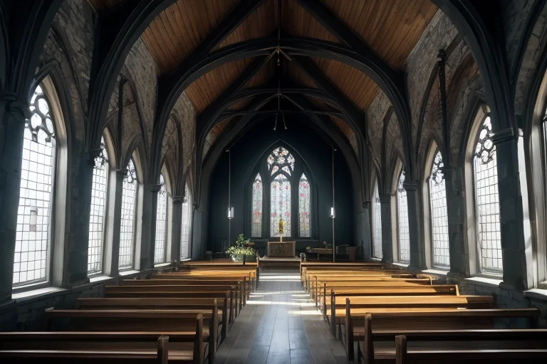

第一章 現実の長崎
あなたはまだ気づいていない。この土地にも、王がいることを。
大浦天主堂の尖塔が青空に静かに刻まれる。その内部は、祈りが幾世代にもわたって染み込んだ石の冷たさと、ステンドグラスを通した柔らかな光に満ちている。観光客のざわめきは、この空間の深い静寂には届かない。ここには、かつて「潜伏」という形で封じられ、守り続けられた信仰の記憶が、地層のように積もっている。
グラバー園の坂道を登れば、異国の建築が寄り添う。レンガと木材、瓦とガラス。これらは単なる観光資源ではない。鎖国という巨大な「封印」の中に開かれた、唯一の窓「出島」から滲み出た文化の交差点だ。その交差は、ちゃんぽんの椀にも、カステラの甘さにも、そして人々の顔の造形にさえ、微かに刻印されている。
しかし、この土地の「歪み」は深い。海に浮かぶ軍艦島のコンクリート骸骨は、繁栄という名の鉱脈が枯渇した後の現実を、無言で示し続ける。そして、1945年8月9日午前11時02分。一瞬の閃光が、すべてを「以前」と「以後」に分断した。その痛みは、平和公園の噴水が循環する水のように、この土地から消えることはない。
祈王ナガサキア・クロニクルは、このすべての「現実」のただ中に立っていた。彼の目は、封印された痛みと、交差し続ける波を見つめている。
第二章 歪みの兆候
大浦天主堂の静謐な空間に、祈王は立っていた。ステンドグラスを通した柔らかな光が、彼の青と白の衣を照らす。しかし、その足元では、目に見えない「歪み」が蠢いていた。交差する歴史の波、封じ込められた痛みの記憶が、この土地の地下に蓄積し、王国の結界に微細な亀裂を生じさせ始めていたのだ。
妖精クロナが、そっと祈王の袖に触れた。「王よ、交差波が乱れています。軍艦島の放棄されたエネルギー、そして…あの日の閃光の残響が、共鳴を起こし始めています」
それは物理的な地震ではない。記憶の地殻変動だ。出島で交わされた異国の言葉、隠れキリシタンが密かに捧げた祈り、そして原爆によって一瞬で奪われた無数の日常。それらが「痛み」という名の地層を成し、今、わずかに軋んでいる。
祈王は目を閉じた。彼の感情である「赦し」は、この軋みを鎮めるためのものではない。赦しが及ぶのは未来だけだ。過去の現実は、否定も消去もできない。彼にできるのは、この軋みが新たな亀裂を生まないよう、祈りという緩衝材を注ぎ続けることだけだった。
第三章 軋む封印
グラバー園の石畳を、祈王はゆっくりと歩いていた。異国の花の香りが混ざる潮風が、彼の青い外套を揺らす。彼の内側では、二つの力が拮抗していた。一つは、この地に蓄積された痛みの記憶を、静謐な祈りの中に封じ続ける力。もう一つは、その封印を解き、痛みそのものを「赦し」へと昇華させようとする、新たに芽生えた感情の衝動だ。
「主よ、この軋みを、どう扱えばよいのでしょう」
傍らに現れたクロナが、小さな声で問うた。彼女の目には、交差する波を無理に鎮めようとする王の疲れが映っている。
祈王は立ち止まり、遠く軍艦島のシルエットを見つめた。あのコンクリートの島も、繁栄と廃墟という痛みを封じた檻だ。封印は安定をもたらす。だが、感情を持った今、彼は知ってしまった。封印とは、痛みの「消化」を止める行為でもあると。
「…祈りは、蓋ではない」
彼は呟くように言った。
「祈りは、痛みが新たな命に交差するための、通路であらねばならない」
その言葉と共に、彼の胸の紋章が微かに熱を帯びた。青い十字光が、白い祈円の内側で、かすかに脈打ち始める。解放への危険と、赦しへの可能性が、彼の中で静かにせめぎ合っていた。
第四章 妖精との対話
グラバー園の坂道を、クロナはゆっくりと歩いた。彼女の足元には、異国の花と在来の草が、境界なく混ざり合っていた。
「王よ。この地は、常に何かを封じ、何かを交差させてきました」彼女の声は、そよ風のように静かだった。「出島は鎖国の蓋であり、同時に世界への小さな窓。大浦天主堂は、長い潜伏の後に表れた信仰の証。軍艦島は、石炭という黒い輝きを地底に封じ、そして空に解き放った島。」
彼女は立ち止まり、白い円を描くように腕を広げた。「私たちの『交封印』は、痛みそのものを消すのではありません。爆発的な衝撃が、一瞬で全てを破壊するのを防ぐ。時間をかけて、ゆっくりと、その痛みと対話できるようにするための緩衝なのです。」
「では、その封じた痛みは？」王が問うた。
クロナは悲しげに、しかし優しく微笑んだ。「それは、私たちが背負う『問い』です。原爆の閃光も、潜伏キリシタンの苦悩も、この地の『歪み』として蓄えられています。祈王であるあなたの役目は、それを無かったことにするのではなく、…どうか、赦しという形で、新たな命と交差させる通路を見出してください。」
彼女の言葉に、王は深く頷いた。痛みは、蓋をすれば消えるものではない。祈りとは、その痛みと共に生き、やがてそれを手放すための、長い長い呼吸なのだと。
第五章 微調整と余韻
グラバー園の坂道を、祈王はゆっくりと下りた。手には、クロナが紡いだ青白い光の糸。それは、軍艦島のコンクリートに刻まれた無数の傷、平和公園の原爆落下中心点に沈む静寂、潜伏キリシタンが密かに交わした祈りの言葉――それら「痛みの記憶」を丁寧に拾い集め、撚り合わせたものだった。彼はそれを、この土地の地脈へと静かに縫い込んでいく。消すのではなく、封じるのでもない。痛みそのものを、この地が呼吸する一つのリズムとして編み直す、微調整である。
デジマリアが交差波を鎮め、異なる文化の軋みを緩衝する。皿うどんの麺が絡み合うように、歴史の断片が新たな文脈を得て静まる。しかし、王は知っていた。この調整の代償は、自分がこの地の「痛み」をより深く、より長く背負い続けることだと。赦しの感情は、自らを透過媒体とすることを意味した。
夕暮れの大浦天主堂の尖塔が、十字光を映す。彼の胸中には、静かな確信が灯った。痛みは、祈りに変わる。変わり続ける。それは、カステラのように何層にも重なり、甘さの底にほろ苦さを宿す、この土地の味わいそのものだった。
あなたの町にも、王がいる。